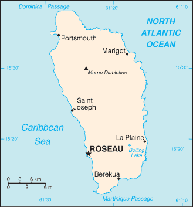
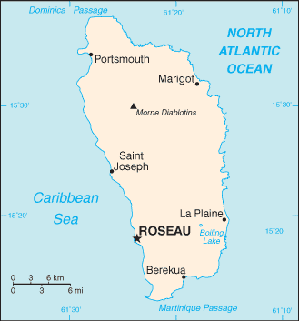

Central America and Caribbean :: DOMINICA
Introduction :: DOMINICA
-
Dominica was the last of the Caribbean islands to be colonized by Europeans due chiefly to the fierce resistance of the native Caribs. France ceded possession to Great Britain in 1763, which colonized the island in 1805. In 1980, two years after independence, Dominica's fortunes improved when a corrupt and tyrannical administration was replaced by that of Mary Eugenia CHARLES, the first female prime minister in the Caribbean, who remained in office for 15 years. On 18 September 2017, Hurricane Maria passed over the island causing extensive damage to structures, roads, communications, and the power supply, and largely destroying critical agricultural areas.
Geography :: DOMINICA
-
Caribbean, island between the Caribbean Sea and the North Atlantic Ocean, about halfway between Puerto Rico and Trinidad and Tobago15 25 N, 61 20 WCentral America and the Caribbeantotal: 751 sq kmland: 751 sq kmwater: 0 sq kmcountry comparison to the world: 189slightly more than four times the size of Washington, DC0 km148 kmterritorial sea: 12 nmcontiguous zone: 24 nmexclusive economic zone: 200 nmtropical; moderated by northeast trade winds; heavy rainfallrugged mountains of volcanic originmean elevation: NAelevation extremes: lowest point: Caribbean Sea 0 mhighest point: Morne Diablotins 1,447 mtimber, hydropower, arable landagricultural land: 34.7%arable land 8%; permanent crops 24%; permanent pasture 2.7%forest: 59.2%other: 6.1% (2011 est.)NApopulation is mostly clustered along the coast, with roughly a third living in the parish of St. George, in or around the capital of Roseau; the volcanic interior is sparsely populatedflash floods are a constant threat; destructive hurricanes can be expected during the late summer monthsvolcanism: Dominica was the last island to be formed in the Caribbean some 26 million years ago, it lies in the middle of the volcanic island arc of the Lesser Antilles that extends from the island of Saba in the north to Grenada in the south; of the 16 volcanoes that make up this arc, five are located on Dominica, more than any other island in the Caribbean: Morne aux Diables (861 m), Morne Diablotins (1,430 m), Morne Trois Pitons (1,387 m), Watt Mountain (1,224 m), which last erupted in 1997, and Morne Plat Pays (940 m); the two best known volcanic features on Dominica, the Valley of Desolation and the Boiling Lake thermal areas, lie on the flanks of Watt Mountain and both are popular tourist destinationswater shortages a continuing concern; pollution from chemicals used in farming and from untreated sewage; forests endangered by the expansion of farming activitiesparty to: Biodiversity, Climate Change, Climate Change-Kyoto Protocol, Desertification, Endangered Species, Environmental Modification, Hazardous Wastes, Law of the Sea, Ozone Layer Protection, Ship Pollution, Whalingsigned, but not ratified: none of the selected agreementsknown as "The Nature Island of the Caribbean" due to its spectacular, lush, and varied flora and fauna, which are protected by an extensive natural park system; the most mountainous of the Lesser Antilles, its volcanic peaks are cones of lava craters and include Boiling Lake, the second-largest, thermally active lake in the world
People and Society :: DOMINICA
-
73,897 (July 2017 est.)country comparison to the world: 202noun: Dominican(s)adjective: Dominicanblack 86.6%, mixed 9.1%, indigenous 2.9%, other 1.3%, unspecified 0.2% (2001 est.)English (official), French patoisRoman Catholic 61.4%, Protestant 28.6% (includes Evangelical 6.7%, Seventh Day Adventist 6.1%, Pentecostal 5.6%, Baptist 4.1%, Methodist 3.7%, Church of God 1.2%, other 1.2%), Rastafarian 1.3%, Jehovah's Witness 1.2%, other 0.3%, none 6.1%, unspecified 1.1% (2001 est.)0-14 years: 21.72% (male 8,210/female 7,843)15-24 years: 15.14% (male 5,758/female 5,428)25-54 years: 42.2% (male 15,809/female 15,372)55-64 years: 9.81% (male 3,860/female 3,387)65 years and over: 11.14% (male 3,679/female 4,551) (2017 est.)total: 33.5 yearsmale: 33 yearsfemale: 34 years (2017 est.)country comparison to the world: 910.18% (2017 est.)country comparison to the world: 18615.1 births/1,000 population (2017 est.)country comparison to the world: 1277.9 deaths/1,000 population (2017 est.)country comparison to the world: 93-5.4 migrant(s)/1,000 population (2017 est.)country comparison to the world: 194population is mosly clustered along the coast, with roughly a third living in the parish of St. George, in or around the capital of Roseau; the volcanic interior is sparsely populatedurban population: 70.1% of total population (2017)rate of urbanization: 0.85% annual rate of change (2015-20 est.)ROSEAU (capital) 15,000 (2014)at birth: 1.05 male(s)/female0-14 years: 1.05 male(s)/female15-24 years: 1.06 male(s)/female25-54 years: 1.03 male(s)/female55-64 years: 1.15 male(s)/female65 years and over: 0.79 male(s)/femaletotal population: 1.02 male(s)/female (2016 est.)total: 10.6 deaths/1,000 live birthsmale: 14 deaths/1,000 live birthsfemale: 7 deaths/1,000 live births (2017 est.)country comparison to the world: 132total population: 77.2 yearsmale: 74.2 yearsfemale: 80.3 years (2017 est.)country comparison to the world: 762.03 children born/woman (2017 est.)country comparison to the world: 1155.5% of GDP (2014)country comparison to the world: 1263.8 beds/1,000 population (2012)improved:urban: 95.7% of populationunimproved:urban: 4.3% of population (2015 est.)improved:urban: 79.6% of populationrural: 84.3% of populationtotal: 81.1% of populationunimproved:urban: 20.4% of populationrural: 15.7% of populationtotal: 18.9% of population (2007 est.)NANANAnote: active local transmission of Zika virus by Aedes species mosquitoes has been identified in this country (as of August 2016); it poses an important risk (a large number of cases possible) among US citizens if bitten by an infective mosquito; other less common ways to get Zika are through sex, via blood transfusion, or during pregnancy, in which the pregnant woman passes Zika virus to her fetus (2016)27.9% (2016)country comparison to the world: 33some 3,000 Carib Indians still living on Dominica are the only pre-Columbian population remaining in the eastern Caribbean
Government :: DOMINICA
-
conventional long form: Commonwealth of Dominicaconventional short form: Dominicaetymology: the island was named by explorer Christopher COLUMBUS for the day of the week on which he spotted it, Sunday ("Domingo" in Latin), 3 November 1493parliamentary republicname: Roseaugeographic coordinates: 15 18 N, 61 24 Wtime difference: UTC-4 (1 hour ahead of Washington, DC, during Standard Time)10 parishes; Saint Andrew, Saint David, Saint George, Saint John, Saint Joseph, Saint Luke, Saint Mark, Saint Patrick, Saint Paul, Saint Peter3 November 1978 (from the UK)Independence Day, 3 November (1978)previous 1967 (preindependence); latest presented 25 July 1978, entered into force 3 November 1978; amended several times, last in 2015 (2016)common law based on the English modelaccepts compulsory ICJ jurisdiction; accepts ICCt jurisdictioncitizenship by birth: yescitizenship by descent: yesdual citizenship recognized: yesresidency requirement for naturalization: 5 years18 years of age; universalchief of state: President Charles A. SAVARIN (since 2 October 2013)head of government: Prime Minister Roosevelt SKERRIT (since 8 January 2004)cabinet: Cabinet appointed by the president on the advice of the prime ministerelections/appointments: president nominated by the prime minister and leader of the opposition party and elected by the House of Assembly for a 5-year term (eligible for a second term); election last held on 30 September 2013 (next to be held in October 2018); prime minister appointed by the presidentelection results: Charles A. SAVARIN (DLP) elected president; House of Assembly vote - 19-0description: unicameral House of Assembly (32 seats; 21 representatives directly elected in single-seat constituencies by simple majority vote, 9 senators appointed by the Assembly, and 2 ex-officio members - the House Speaker and the Clerk of the House; members serve 5-year terms)elections: last held on 8 December 2014 (next to be held in 2019); note - tradition dictates that the election is held within 5 years of the last election, but technically it is 5 years from the first seating of parliament plus a 90-day grace periodelection results: percent of vote by party - DLP 57.0%, UWP 42.9%, other 0.1%; seats by party - DLP 15, UWP 6highest court(s): the Eastern Caribbean Supreme Court (ECSC) is the superior court of the Organization of Eastern Caribbean States; the ECSC - headquartered on St. Lucia - consists of the Court of Appeal - headed by the chief justice and 4 judges - and the High Court with 18 judges; the Court of Appeal is itinerant, travelling to member states on a schedule to hear appeals from the High Court and subordinate courts; High Court judges reside at the member states with 2 in Dominica; note - Dominica is a member of the Caribbean Court of Justicejudge selection and term of office: chief justice of Eastern Caribbean Supreme Court appointed by the Her Majesty, Queen ELIZABETH II; other justices and judges appointed by the Judicial and Legal Services Commission, an independent body of judicial officials; Court of Appeal justices appointed for life with mandatory retirement at age 65; High Court judges appointed for life with mandatory retirement at age 62subordinate courts: Court of Summary Jurisdiction; magistrates' courtsDominica Freedom Party or DFP [Judith PESTAINA]Dominica Labor Party or DLP [Roosevelt SKERRIT]Dominica United Workers Party or UWP [Lennox LINTON]Dominica Trade Union [Harold SEALY]Dominca Public Service Union [Mervin ANTHONY]ACP, AOSIS, C, Caricom, CD, CDB, CELAC, Commonwealth of Nations, ECCU, FAO, G-77, IAEA, IBRD, ICCt, ICRM, IDA, IFAD, IFC, IFRCS, ILO, IMF, IMO, Interpol, IOC, ISO (correspondent), ITU, ITUC (NGOs), MIGA, NAM, OAS, OECS, OIF, OPANAL, OPCW, Petrocaribe, UN, UNCTAD, UNESCO, UNIDO, UPU, WFTU, WHO, WIPO, WMO, WTOchief of mission: Ambassador Vince HENDERSON (since 18 January 2017)chancery: 3216 New Mexico Avenue NW, Washington, DC 20016telephone: [1] (202) 364-6781FAX: [1] (202) 364-6791consulate(s) general: New Yorkthe US does not have an embassy in Dominica; the US Ambassador to Barbados is accredited to Dominicagreen with a centered cross of three equal bands - the vertical part is yellow (hoist side), black, and white and the horizontal part is yellow (top), black, and white; superimposed in the center of the cross is a red disk bearing a Sisserou parrot, unique to Dominica, encircled by 10 green, five-pointed stars edged in yellow; the 10 stars represent the 10 administrative divisions (parishes); green symbolizes the island's lush vegetation; the triple-colored cross represents the Christian Trinity; the yellow color denotes sunshine, the main agricultural products (citrus and bananas), and the native Carib Indians; black is for the rich soil and the African heritage of most citizens; white signifies rivers, waterfalls, and the purity of aspirations; the red disc stands for social justiceSisserou parrot, Carib Wood flower; national colors: green, yellow, black, white, redname: "Isle of Beauty"lyrics/music: Wilfred Oscar Morgan POND/Lemuel McPherson CHRISTIANnote: adopted 1967
Economy :: DOMINICA
-
The Dominican economy has been dependent on agriculture - primarily bananas - in years past, but increasingly has been driven by tourism as the government seeks to promote Dominica as an "ecotourism" destination. Moreover, Dominica has an offshore medical education sector. In order to diversify the island's economy, the government is also attempting to foster an offshore financial industry and plans to sign agreements with the private sector to develop geothermal energy resources. In 2003, the government began a comprehensive restructuring of the economy - including the elimination of price controls, privatization of the state banana company, and tax increases - to address an economic and financial crisis and to meet IMF requirements. In 2009 and 2013, the economy contracted as a result of the global recession; growth remains anemic. Although public debt levels continue to exceed pre-recession levels, the debt burden declined from 78% of GDP in 2011 to approximately 70% in 2012.$805 million (2016 est.)$774 million (2015 est.)$786 million (2014 est.)note: data are in 2016 dollarscountry comparison to the world: 205$581 million (2016 est.)2.6% (2016 est.)-2.5% (2015 est.)4.4% (2014 est.)country comparison to the world: 180$11,300 (2016 est.)$11,000 (2015 est.)$11,300 (2014 est.)note: data are in 2016 dollarscountry comparison to the world: 13220.4% of GDP (2016 est.)14.6% of GDP (2015 est.)7.7% of GDP (2014 est.)country comparison to the world: 160household consumption: 73.8%government consumption: 22.8%investment in fixed capital: 12.5%investment in inventories: 0%exports of goods and services: 39.1%imports of goods and services: -48.2% (2016 est.)agriculture: 14.7%industry: 13.4%services: 71.9% (2016 est.)bananas, citrus, mangos, root crops, coconuts, cocoanote: forest and fishery potential not exploitedsoap, coconut oil, tourism, copra, furniture, cement blocks, shoes1.6% (2016 est.)country comparison to the world: 12225,000 (2000 est.)country comparison to the world: 209agriculture: 40%industry: 32%services: 28% (2002 est.)23% (2000 est.)country comparison to the world: 18929% (2009 est.)lowest 10%: NA%highest 10%: NA%revenues: $148.1 millionexpenditures: $148.1 million (2016 est.)28.5% of GDP (2016 est.)country comparison to the world: 910% of GDP (2016 est.)country comparison to the world: 4181% of GDP (2016 est.)83% of GDP (2015 est.)country comparison to the world: 351 July - 30 June0% (2016 est.)-0.8% (2015 est.)country comparison to the world: 556.5% (31 December 2010)6.5% (31 December 2009)country comparison to the world: 568.33% (31 December 2016 est.)8.67% (31 December 2015 est.)country comparison to the world: 102$112 million (31 December 2016 est.)$96.59 million (31 December 2015 est.)country comparison to the world: 189$509.7 million (31 December 2016 est.)$480.9 million (31 December 2015 est.)country comparison to the world: 185$195.9 million (31 December 2016 est.)$277.8 million (31 December 2015 est.)country comparison to the world: 184$5 million (2016 est.)$-85.6 million (2015 est.)country comparison to the world: 71$43.7 million (2016 est.)$44.9 million (2015 est.)country comparison to the world: 207bananas, soap, bay oil, vegetables, grapefruit, orangesTrinidad and Tobago 15.4%, Jamaica 13.3%, Saudi Arabia 13%, St. Kitts and Nevis 11.8%, Guyana 9.3%, Barbados 5.1%, US 5.1%, Antigua and Barbuda 4.5%, Egypt 4.1% (2016)$186.4 million (2016 est.)$194.4 million (2015 est.)country comparison to the world: 208manufactured goods, machinery and equipment, food, chemicalsUS 23.4%, Trinidad and Tobago 18.1%, Italy 8.7%, UK 5.4% (2016)$221.9 million (31 December 2016 est.)$126.2 million (31 December 2015 est.)country comparison to the world: 156$288.6 million (31 December 2016 est.)$314.2 million (31 December 2015 est.)country comparison to the world: 187East Caribbean dollars (XCD) per US dollar -2.7 (2016 est.)2.7 (2015 est.)2.7 (2014 est.)2.7 (2013 est.)2.7 (2012 est.)
Energy :: DOMINICA
-
population without electricity: 5,900electrification - total population: 93%electrification - urban areas: 99%electrification - rural areas: 80% (2012)94 million kWh (2015 est.)country comparison to the world: 19987.42 million kWh (2015 est.)country comparison to the world: 2000 kWh (2016 est.)country comparison to the world: 1300 kWh (2016 est.)country comparison to the world: 14333,200 kW (2015 est.)country comparison to the world: 20060.2% of total installed capacity (2015 est.)country comparison to the world: 1280% of total installed capacity (2015 est.)country comparison to the world: 7918.1% of total installed capacity (2015 est.)country comparison to the world: 9521.7% of total installed capacity (2015 est.)country comparison to the world: 290 bbl/day (2016 est.)country comparison to the world: 1270 bbl/day (2014 est.)country comparison to the world: 1150 bbl/day (2014 est.)country comparison to the world: 1190 bbl (1 January 2017 es)country comparison to the world: 1270 bbl/day (2014 est.)country comparison to the world: 1361,000 bbl/day (2015 est.)country comparison to the world: 2060 bbl/day (2014 est.)country comparison to the world: 149978.2 bbl/day (2014 est.)country comparison to the world: 2020 cu m (2013 est.)country comparison to the world: 1280 cu m (2013 est.)country comparison to the world: 1760 cu m (2013 est.)country comparison to the world: 940 cu m (2013 est.)country comparison to the world: 1180 cu m (1 January 2014 es)country comparison to the world: 133100,000 Mt (2013 est.)country comparison to the world: 208
Communications :: DOMINICA
-
total subscriptions: 13,328subscriptions per 100 inhabitants: 18 (July 2016 est.)country comparison to the world: 188total: 78,444subscriptions per 100 inhabitants: 106 (July 2016 est.)country comparison to the world: 192general assessment: fully automatic networkdomestic: fixed-line connections continued to decline slowly with the two active operators providing about 18 fixed-line connections per 100 persons; subscribership among the three mobile-cellular providers is about 105 per 100 personsinternational: country code - 1-767; landing points for the East Caribbean Fiber Optic System (ECFS) and the Global Caribbean Network (GCN) submarine cables providing connectivity to other islands in the eastern Caribbean extending from the British Virgin Islands to Trinidad; microwave radio relay and SHF radiotelephone links to Martinique and Guadeloupe; VHF and UHF radiotelephone links to Saint Lucia (2016)no terrestrial TV service available; subscription cable TV provider offers some locally produced programming plus channels from the US, Latin America, and the Caribbean; state-operated radio broadcasts on 6 stations; privately owned radio broadcasts on about 15 stations (2007).dmtotal: 49,439percent of population: 67.0% (July 2016 est.)country comparison to the world: 190
Transportation :: DOMINICA
-
number of registered air carriers: 0inventory of registered aircraft operated by air carriers: 0annual passenger traffic on registered air carriers: 0annual freight traffic on registered air carriers: 0 mt-km (2015)J7 (2016)2 (2013)country comparison to the world: 199total: 21,524 to 2,437 m: 1914 to 1,523 m: 1 (2017)total: 1,512 kmpaved: 762 kmunpaved: 750 km (2010)country comparison to the world: 178total: 43by type: bulk carrier 11, cargo 22, chemical tanker 2, petroleum tanker 4, refrigerated cargo 3, roll on/roll off 1foreign-owned: 32 (Australia 1, Estonia 6, Germany 5, Greece 4, India 2, Latvia 2, Norway 1, Russia 3, Saudi Arabia 2, Syria 4, Turkey 1, Ukraine 1)registered in other countries: 1 (Saint Vincent and the Grenadines 1) (2010)country comparison to the world: 75major seaport(s): Portsmouth, Roseau
Military and Security :: DOMINICA
-
no regular military forces; Commonwealth of Dominica Police Force (includes Coast Guard) (2012)
Transnational Issues :: DOMINICA
-
Dominica is the only Caribbean state to challenge Venezuela's sovereignty claim over Aves Island and joins the other island nations in challenging whether the feature sustains human habitation, a criterion under the UN Convention on the Law of the Sea, which permits Venezuela to extend its EEZ and continental shelf claims over a large portion of the eastern Caribbean Seatransshipment point for narcotics bound for the US and Europe; minor cannabis producer